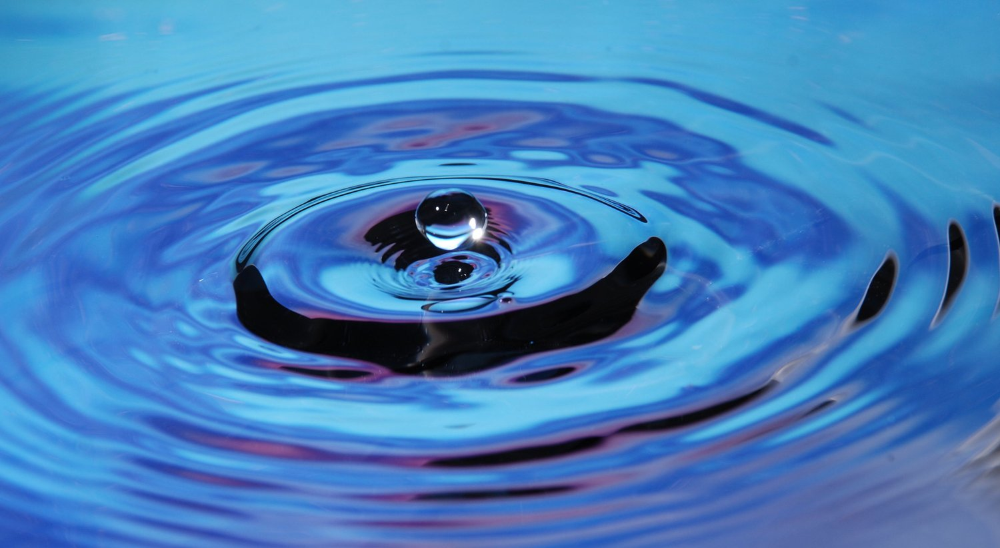
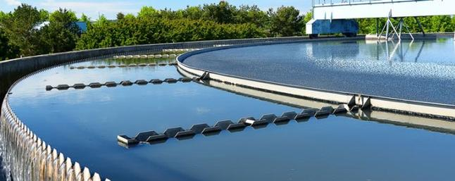
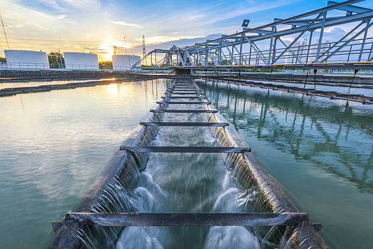
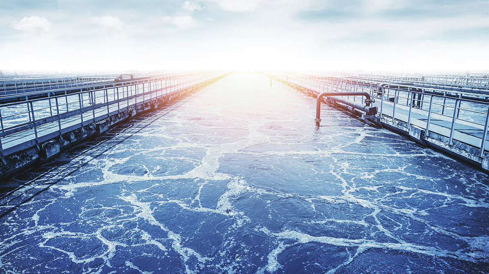
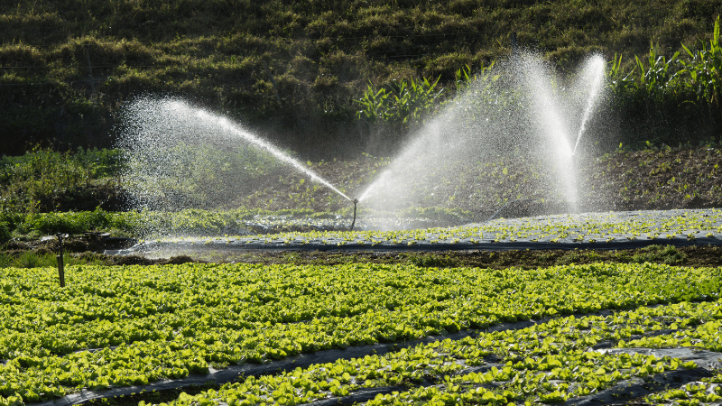
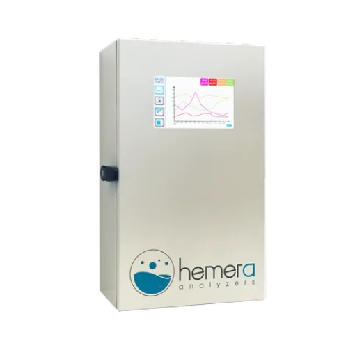
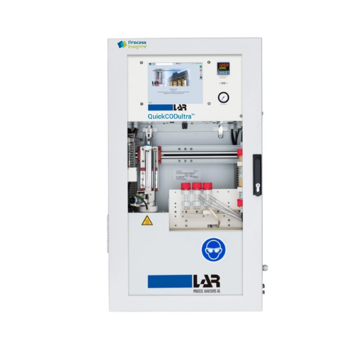
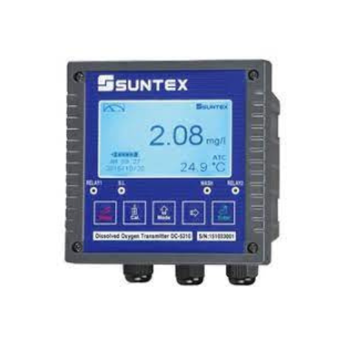

Water Analyzer
At Agua Instruments, we offer state-of-the-art Water Analyzers designed for precise Online Water Quality Monitoring and Continuous Water Analysis. Our Industrial Water Monitoring solutions cater to various sectors, ensuring compliance with environmental standards and enhancing operational efficiency. With our advanced technology, we provide reliable and real-time data to help you maintain water quality and safety.

Why Choose Agua Instruments for Water Analyzers?
Advanced Technology
Our water analyzers leverage cutting-edge technology for precise and reliable measurements.
Real-Time Water Analysis
Benefit from real-time data to make informed decisions and maintain water quality.
Custom Solutions
We offer tailored solutions to meet the specific needs of different industries.
Expert Support
Our team provides comprehensive support, from installation to maintenance and technical assistance.
Cost-Effective
Our solutions are competitively priced, ensuring you get the best value without compromising on quality or performance.

Ensure safe and clean drinking water by monitoring various quality parameters in real-time.

Maintain the quality of process water in manufacturing, food processing, and other industries.

Monitor and assess water quality in natural water bodies to protect ecosystems and comply with regulations.

Analyze effluent water to ensure it meets regulatory standards before discharge.

Monitor water quality in irrigation systems to ensure optimal crop growth and safety.


